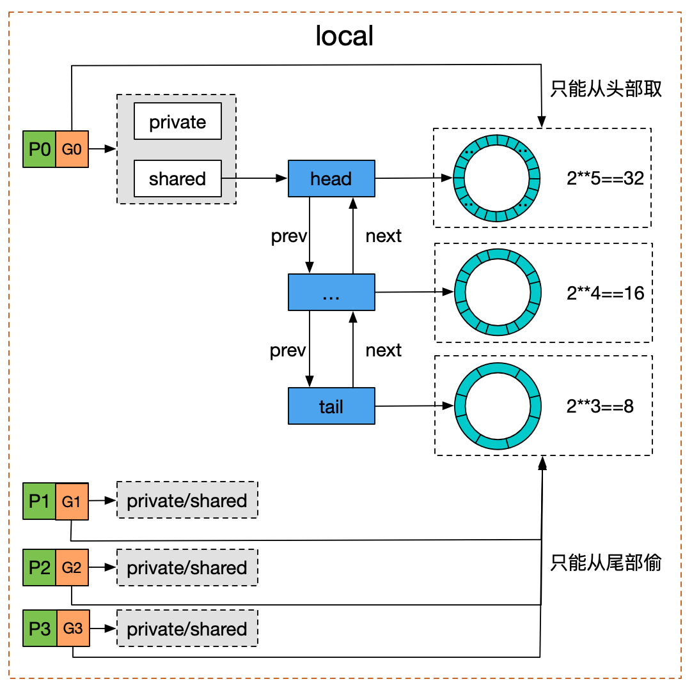

Go 语言实现——sync.Pool¶
使用示例¶
sync.Pool 可以用来池化复用一些需要频繁申请释放的临时对象，减小 gc 的压力从而提高性能。
前述 Go 语言实现——io.Copy 和 zerocopy 优化 中提到的 splice 就使用 sync.Pool 对第一步需要创建的 pipe 进行了池化复用。
type splicePipe struct {
// ...
}
// 如果不指定 New 方法，那么在 pool 中没有可用对象的时候，pool.Get 就返回 nil
// 如果指定了则会调用 New 函数新建一个对象。
var splicePipePool = sync.Pool{New: newPoolPipe}
func newPoolPipe() interface{} {
// 创建并初始化一个新的 splicePipe 对象
p := newPipe()
// 设置这个新的对象 gc 前调用 destroyPipe 函数
runtime.SetFinalizer(p, destroyPipe)
return p
}
func getPipe() (*splicePipe, string, error) {
// 从 pool 中去一个闲置对象或者创建一个新对象
v := splicePipePool.Get()
return v.(*splicePipe), "", nil
}
func putPipe(p *splicePipe) {
// 将闲置对象放回 pool 中
splicePipePool.Put(p)
}
func destroyPipe(p *splicePipe) {
// cleanup ...
}
https://github.com/golang/go/blob/release-branch.go1.17/src/internal/poll/splice_linux.go#L166
实现¶
sync.Pool 结构体定义：
type Pool struct {
// P 是 虚拟线程的个数
local [P]poolLocal
victim [P]poolLocal
New func() interface{}
}
type poolLocal struct {
private interface{} // 只能被本地 P 使用的对象
shared poolChain // 本地 P 使用 pushHead/popHead 操作对象; 其它 P 可以调用 popTail 从里面偷对象
}
每个虚拟线程维护一个 poolLocal，优先使用 poolLocal 来存储、获取闲置对象，当 poolLocal 没有可用闲置对象的时候，也可以从其它虚拟线程的 poolLocal.shared 中偷闲置对象。类似 GMP 调度中从其它线程偷 goroutine。
往 pool 中存闲置对象的时候。
- 首先检查 poolLocal.private 是不是 nil，如果是 nil 直接存在 private 中。
- 如果不为空，再将对象 pushHead 进 poolLocal.shared 中。
func (p *Pool) Put(x interface{}) {
if x == nil {
return
}
pid := runtime_procPin()
l := p.local[pid]
if l.private == nil {
l.private = x
x = nil
}
if x != nil {
l.shared.pushHead(x)
}
runtime_procUnpin()
}
从 pool 中获取闲置对象的时候。
- 首先检查 private 是不是空，如果不为空直接返回 private。
- 否则 popHead 从 poolLocal.shared 中尝试获取一个闲置对象返回。
- 如果 poolLocal.shared 中也没有闲置对象，那么尝试从其它线程的 poolLocal.shared 中偷一个闲置对象。
- 如果还没有再从 p.victim 中按照前面 1、2、3 的逻辑尝试获取闲置对象返回。
- 如果上述都失败，如果 pool.New 不为空，则调用 pool.New 新建一个对象返回。
第 4 步的 victim 的来历如下，每次 gc 执行前会调用 sync.Pool 注册的一个清理函数会执行 pool.victim, pool.local = pool.local, nil 清理长期不使用的闲置对象，如果一个对象在两次 gc 期间都没有被 Get 出去，这个对象就会被 gc 回收。
func (p *Pool) Get() interface{} {
pid := runtime_procPin()
l := p.local[pid]
x := l.private
l.private = nil
if x == nil {
x, _ = l.shared.popHead()
if x == nil {
x = p.getSlow(pid)
}
}
runtime_procUnpin()
if x == nil && p.New != nil {
x = p.New()
}
return x
}
func (p *Pool) getSlow(pid int) interface{} {
// 尝试从其它线程的 localPool.shared 中偷一个闲置对象
size := len(p.locals)
locals := p.local
for i := 0; i < size; i++ {
l := p.locals[(pid+i+1)%int(size)]
if x, _ := l.shared.popTail(); x != nil {
return x
}
}
// 尝试从 p.victim 中获取一个闲置对象。
// sync.Pool 注册了一个 cleanup 函数，这个函数在每次 gc 前执行一次，
locals = p.victim[pid]
if x := l.private; x != nil {
l.private = nil
return x
}
for i := 0; i < int(size); i++ {
l := indexLocal(locals, (pid+i)%int(size))
if x, _ := l.shared.popTail(); x != nil {
return x
}
}
return nil
}
下面是 Google 的一张图，poolLocal.shared 数据结构是一个 双向链表 + ringbuffer，可以忽略。看主要逻辑就行。
